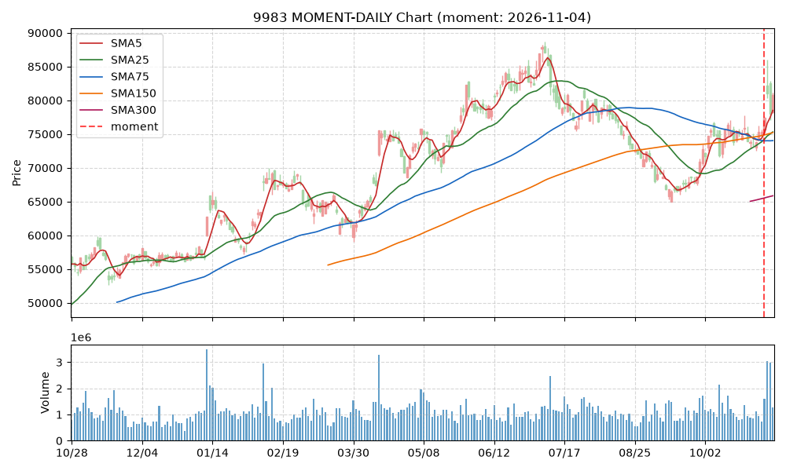
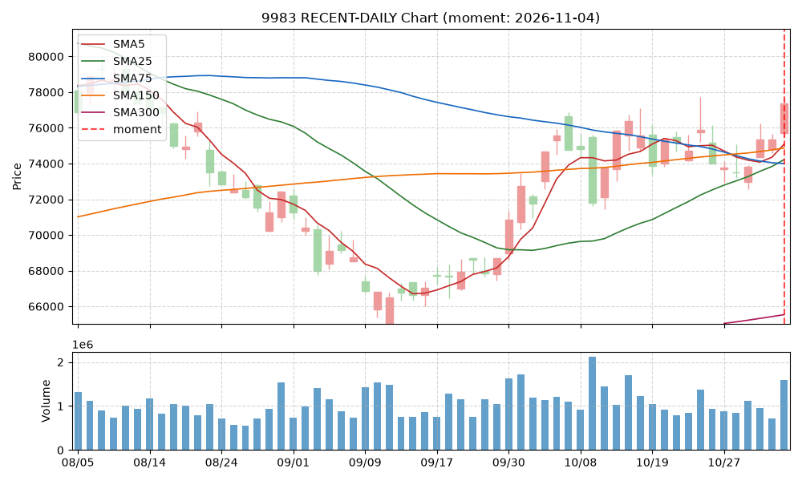
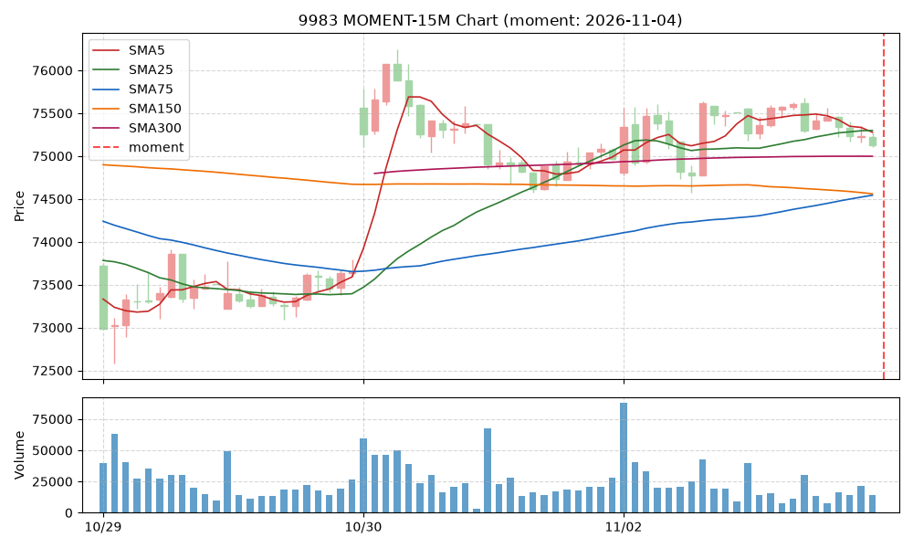
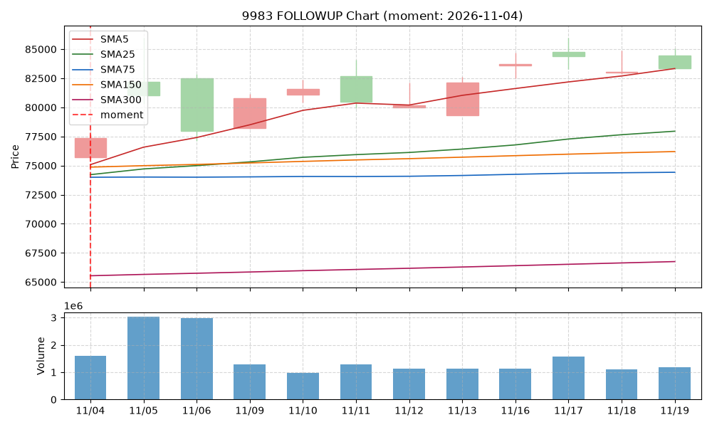

9983 ファーストリテイリング
1. 概要＆チャート
方向: 買い
日時: 2026-11-04 09:00 JST
価格: 76537.0



2. 当時の状況
日足
| SMA | 値 | 傾き | 300との乖離率 |
|---|---|---|---|
| 5 | 74356.0 | 0.4% | 13.6% |
| 25 | 73838.0 | 0.4% | 12.9% |
| 75 | 74048.8 | -0.1% | 13.2% |
| 150 | 74763.3 | 0.1% | 14.3% |
| 300 | 65426.8 | 0.2% | 0.0% |
終値の乖離率（SMA300 との）: 15.2%
15分足
| SMA | 値 | 傾き | 300との乖離率 |
|---|---|---|---|
| 5 | 75278.0 | -0.1% | 0.4% |
| 25 | 75298.8 | 0.0% | 0.4% |
| 75 | 74543.2 | 0.0% | -0.6% |
| 150 | 74560.3 | -0.0% | -0.6% |
| 300 | 74997.8 | -0.0% | 0.0% |
終値の乖離率（SMA300 との）: 0.2%
3. 判断
- 記憶 2026-11-04 09:00 JST 日足25maと75maがゴールデンクロス、15分足もパーフェクトオーダだった 出典: migrated from entry.reason
4. 反省

判定: —
- 記憶 2026-11-06 09:00 JST 11/06 09:00 に 77,941 で 100 株クローズ。損益 +140,400 / +1.83% 出典: migrated from exit/result